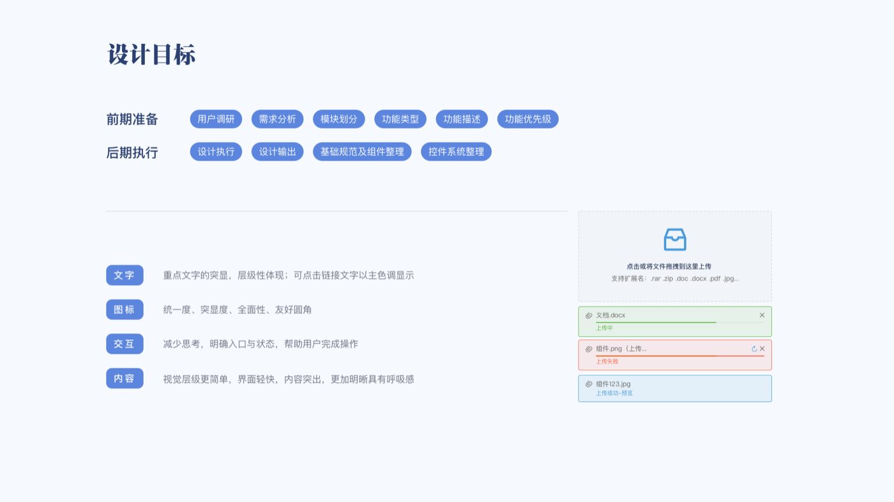
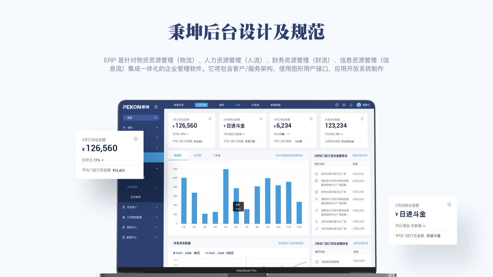
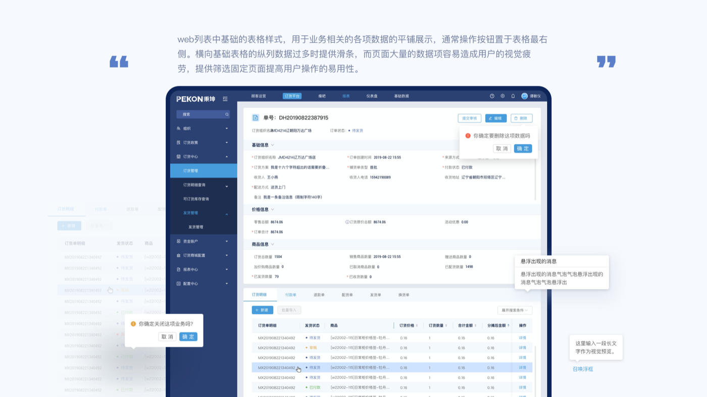
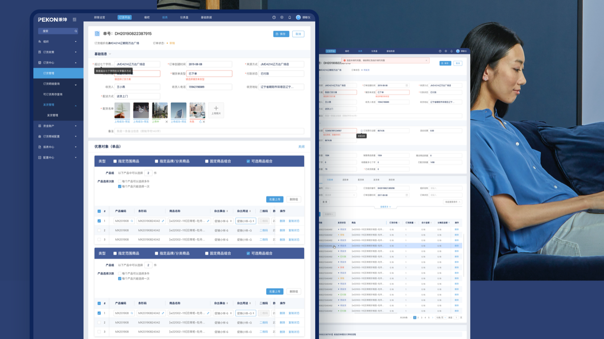
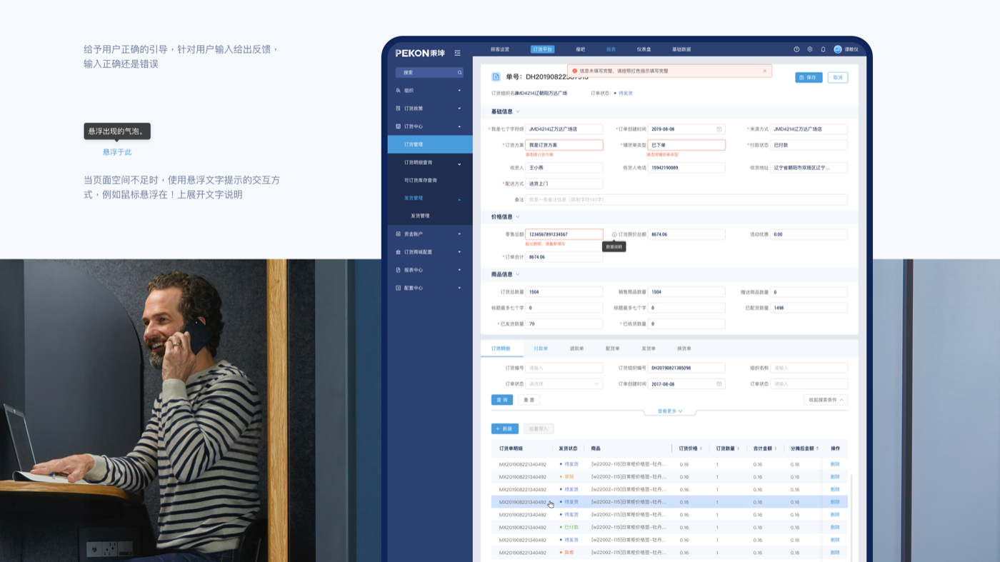
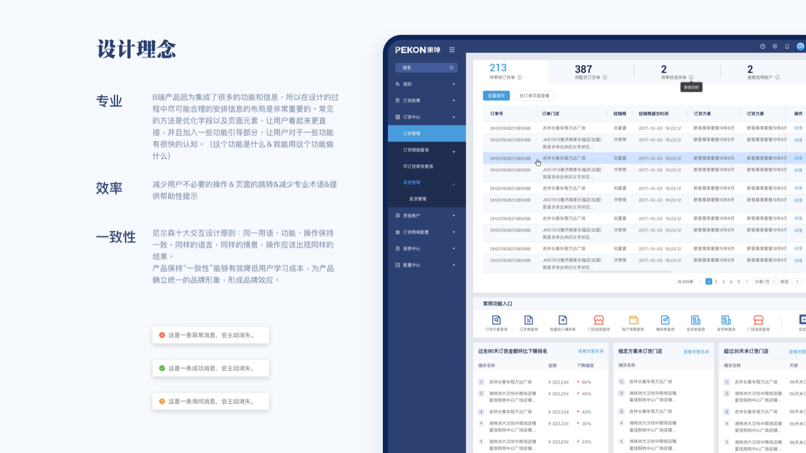
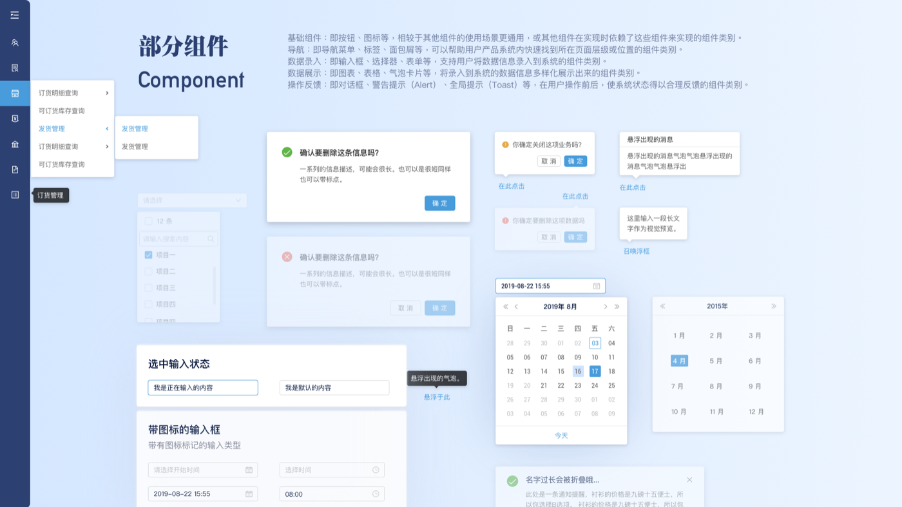
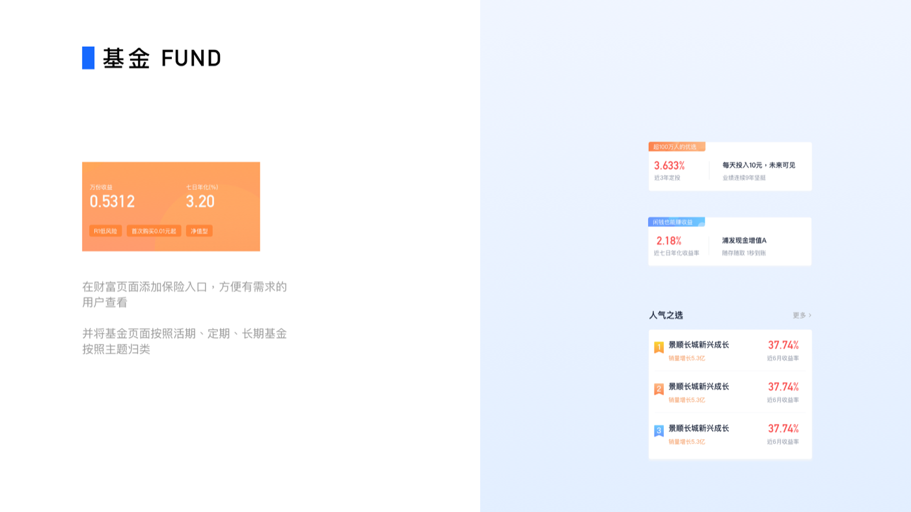

面向品牌总部、经销商与门店的订货管理后台，覆盖经营看板、订货单处理、发货跟进与报表分析。在模块多、字段密的前提下，通过清晰的信息层级与统一的组件语言，让日常操作更高效、也更易上手。
秉坤（PEKON）是一套面向快消与连锁品牌的订货与运营管理后台，连接总部、经销商与门店。业务侧需要在同一系统里完成「看数据 → 下订单 → 跟发货 → 查报表」的闭环，界面必须同时承载看板、列表、长表单与多 Tab 详情，还要兼顾不同角色的使用习惯。
在信息密集的后台场景中，让数据可读、路径可预期、组件可复用，降低培训与协作成本。
模块多、字段多，需要通过分区、折叠与标题层级，让用户先抓住重点指标与待办，再进入细节。
高频操作尽量在列表行内完成；筛选、批量处理与快捷入口减少页面来回跳转。
表单校验、状态标签与顶部提示要明确，让用户知道哪里未完成、下一步该做什么。
表格、按钮、弹窗、消息条共用一套样式，方便开发落地与后续功能扩展。
两类主要使用者决定了导航优先级与页面信息密度。
围绕订货主链路梳理页面结构，保证「进得来、找得到、改得动」。
看板汇总核心指标、趋势图与门店排名，一眼掌握经营健康度。
列表筛选待办订单，进入详情核对价格、商品与收货信息。
按状态跟踪发货进度，处理异常与退款相关单据。
从报表中心下钻明细，支持导出与多维度对比。
以深蓝导航 + 浅灰内容区建立 B 端气质，用主色强调操作与选中态，保证 30+ 页面视觉一致。
导航区深蓝稳重大气；内容区浅底 + 卡片分区；主色蓝用于按钮、链接与选中菜单；红 / 绿 / 黄消息条对应异常、成功与提醒。
标题、表头、正文、辅助说明四级字号；表格支持横向滚动、固定表头与行内操作列，适配宽表场景。

四个关键界面覆盖后台最常见的使用路径，以下为节选设计稿。
顶部聚合本月订货额、回款、订单量等核心指标，中部趋势图切换销售额 / 回款 / 订单量，右侧门店排名辅助发现异常。左侧深色导航固定模块入口，减少迷路成本。

↑ 看板区支持按时间维度切换图表
标准列表页：顶部待办数字卡片 + 常用功能快捷入口，中部宽表承载订单筛选与行内操作。操作列固定在右侧，筛选区可折叠，减轻信息压迫感。

↑ 列表支持筛选、排序与行内操作
详情页拆分基础信息、价格信息与商品信息区块，底部 Tab 切换订货明细、付款单与退款单。宽表区域可横向滚动，状态用色块标签区分待发货、草稿等。

↑ 详情 + 多 Tab 明细的典型 B 端结构
长表单按模块折叠，必填项缺失时字段描红并顶部汇总提示。支持悬浮说明与气泡反馈，在空间有限时补充字段解释，降低误填率。

↑ 校验反馈与引导示意

复杂 B 端首先要「看得懂」：布局分区清晰、重点数据放大；其次「用得顺」：减少跳转与重复输入；最后「长得统」：组件与交互语言一致，降低学习成本。
整理按钮、表单、日期选择、弹窗、消息条等基础组件，方便设计与开发对齐。

针对 B 端高频场景沉淀组件示例：多级菜单、确认弹窗、表格筛选、日历与上传状态等，减少后续页面「各做各的」。
在同一套视觉语言下，将规范延展至财富 / 基金类页面，保持品牌感与信息层级一致。

基金列表、收益卡片与人气榜单沿用主色与卡片结构，在业务不同的情况下仍让用户感到「还是同一个系统」。
做对了什么：先梳理模块与主链路，再统一表格、表单与提示组件；看板、列表、详情三类页面风格一致，培训和上手成本更低。
如果重来：会更早输出组件示例页并走查复杂表单；宽表场景也会多预留一版「精简列」视图，方便小屏使用。
收获：系统做了 B 端后台界面，对高密度信息排版、状态表达与组件化协作有了更具体的体会，也为后续企业与平台类产品打下基础。